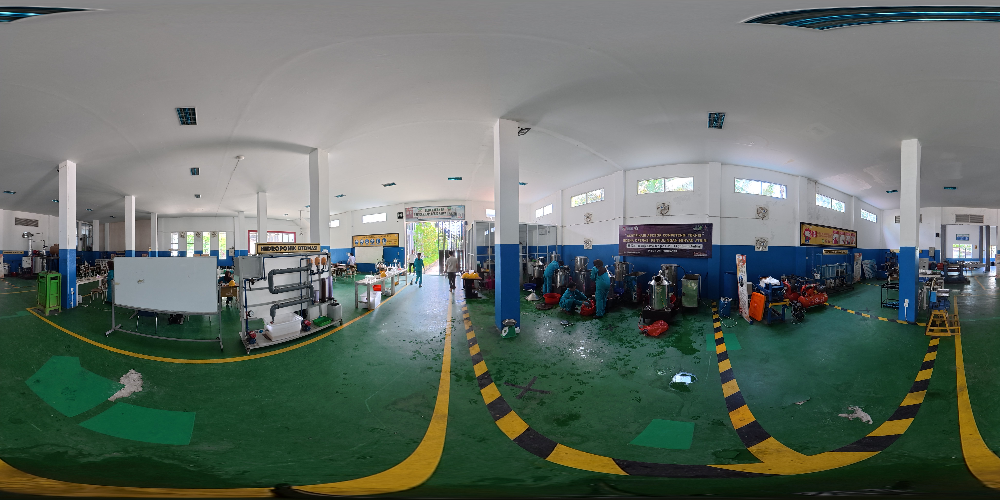

Teknik Kimia Industri
Workshop Terpadu
Selamat Datang
Gunakan kursor di tengah layar untuk berinteraksi dengan objek dan berpindah antar lokasi.
×
Ketuk peta untuk memperbesar

Workshop Terpadu
Gunakan kursor di tengah layar untuk berinteraksi dengan objek dan berpindah antar lokasi.
